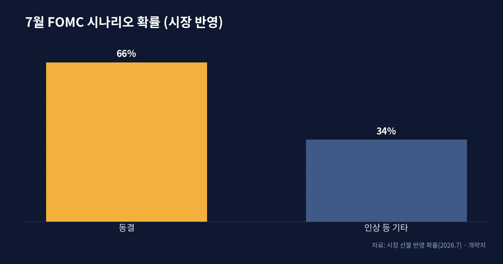
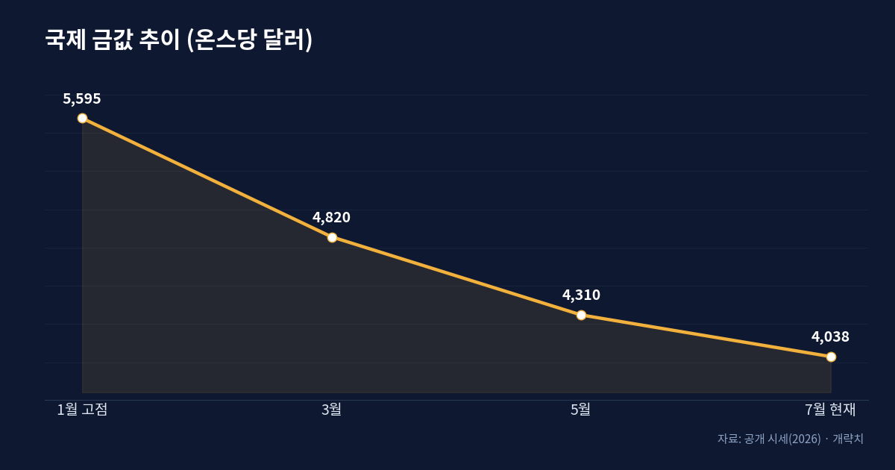
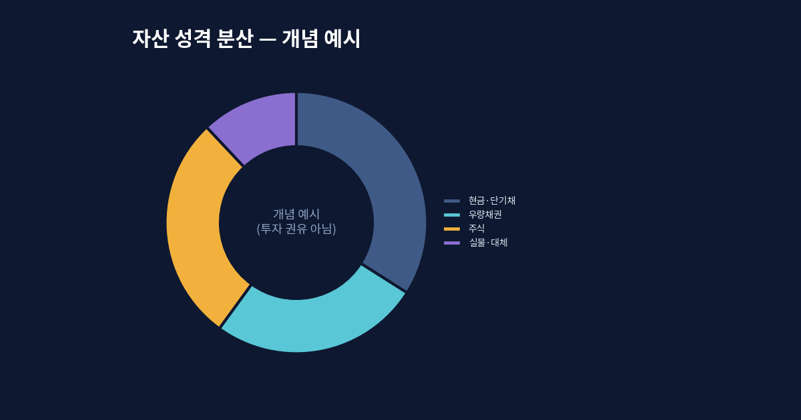

금리를 더 올릴 수도 있다 — 7월 FOMC와 금값 하락이 말하는 신호

다시 등장한 '인상' 시나리오
연초만 해도 시장의 관심사는 "언제 금리를 내리느냐"였다. 반년이 지난 지금, 질문은 정반대로 뒤집혔다. 미국 연방준비제도(Fed)는 현재 정책금리를 3.50~3.75% 구간에 두고 있는데, 7월 29일 회의를 앞두고 시장은 동결 가능성을 대략 66% 정도로 보면서도 한편으로는 '깜짝 인상' 카드까지 열어두고 있다. 일부 글로벌 투자은행은 연준이 물가를 잡겠다는 의지를 보여주기 위해 오히려 한 차례 더 올릴 수 있다고 본다.
배경에는 좀처럼 내려오지 않는 물가가 있다. 미국의 근원 소비자물가 상승률은 목표치 2%를 크게 웃도는 4%대에 머물러 있고, 6월 점도표에서도 다수의 위원이 올해 안에 최소 한 번의 추가 인상을 열어두는 쪽으로 기울었다. '인하는 없다'를 넘어 '인상도 있다'가 된 셈이다.

금값은 왜 고점에서 내려왔나
흥미로운 건 금이다. 통상 인플레이션이 높으면 금이 강해진다고들 하지만, 올해 금은 1월에 기록한 온스당 5,595달러 부근의 사상 최고가에서 상당폭 물러나 7월에는 4,000달러 안팎까지 내려왔다. 고점 대비 30%에 가까운 조정이다.
이유는 단순하다. 금은 이자를 주지 않는 자산이다. 명목금리와 국채 수익률이 높게 유지되고 달러가 강세를 보이면, 이자가 붙는 자산의 매력이 상대적으로 커지고 금은 기회비용이 커진다. 실질금리(명목금리에서 기대 물가를 뺀 값)가 플러스 영역에서 버티는 한, 물가가 높아도 금이 일방적으로 오르긴 어렵다. 한 은행은 국채 금리 상승과 달러 강세, 투자 수요 둔화를 이유로 연말까지 금이 더 눌릴 수 있다고 본다.

유동성은 어디로 흐르나
거시를 볼 때 나는 '금리의 방향'보다 '돈의 이동'을 먼저 본다. 정책금리가 높은 수준에서 오래 유지된다는 건, 위험을 감수하지 않아도 현금과 단기채로 4% 안팎의 수익을 챙길 수 있다는 뜻이다. 이 상태에서는 유동성이 위험자산으로 급하게 몰려가지 않는다. 성장주의 밸류에이션은 할인율(금리)에 특히 민감하기 때문에, 금리가 높게 굳어질수록 '먼 미래의 이익'을 당겨 평가받던 자산일수록 부담이 커진다.
지정학도 같은 지도 위에 있다. 공급망 재편, 관세, 자원 무기화 같은 흐름은 물가의 하방 경직성을 만든다. 즉 물가가 잘 안 내려가는 구조적 이유가 쌓이면, 중앙은행은 금리를 쉽게 못 내리고, 그 결과 유동성 환경도 계속 빡빡하게 유지된다. 오늘의 금리는 통화정책만의 산물이 아니라 세계 정치의 함수이기도 하다.
여기서 한 가지 오해를 짚고 싶다. '물가가 높으니 실물·주식 같은 위험자산으로 도망가야 한다'는 통념은 절반만 맞다. 인플레이션이 높아도 중앙은행이 그것을 잡기 위해 금리를 강하게 유지하면, 시중의 돈은 오히려 마르고 자산가격은 눌린다. 문제는 물가의 절대 수준이 아니라 '물가와 금리의 간격', 즉 실질금리다. 실질금리가 플러스로 버티는 국면에서는 현금의 힘이 세지고, 빚을 내서 자산을 굴리던 전략의 셈법이 근본적으로 바뀐다.
자산 배분의 관점에서
이런 국면에서 되새길 원칙은 화려하지 않다. 첫째, 현금과 단기채가 '기회비용 없는 대기소'가 아니라 그 자체로 수익을 주는 시기라는 점. 둘째, 금리에 민감한 자산과 둔감한 자산을 섞어 특정 시나리오에 몰빵하지 않는 것. 셋째, 금 같은 자산도 '무조건 안전'이 아니라 실질금리·달러와 반대로 움직이는 경향이 있다는 걸 이해하는 것이다.
덧붙이자면, 나는 '지금이 바닥인가 천장인가'를 맞히려는 시도를 오래전에 접었다. 대신 서로 다른 시나리오—인상이 이어지는 경우, 동결이 길어지는 경우, 예상보다 빨리 완화로 도는 경우—각각에서 내 포트폴리오가 어떻게 반응할지를 미리 그려 둔다. 한 방향에 베팅하는 것이 아니라, 어느 방향이 와도 치명타를 입지 않도록 만드는 일. 변동성이 큰 국면일수록 이 '버티는 설계'가 예측보다 힘이 세다.

마무리 — 방향보다 구조
7월 회의가 동결로 끝나든 인상으로 끝나든, 하루의 등락보다 중요한 건 '왜 돈이 이렇게 움직이는가'라는 구조다. 물가가 끈적하고, 금리가 높게 유지되고, 그래서 유동성이 신중해지는 이 사슬을 이해하면, 헤드라인 하나에 흔들릴 일이 줄어든다. 나는 시장을 예측하려 애쓰기보다 이 지도를 자주 갱신하는 편을 택한다.